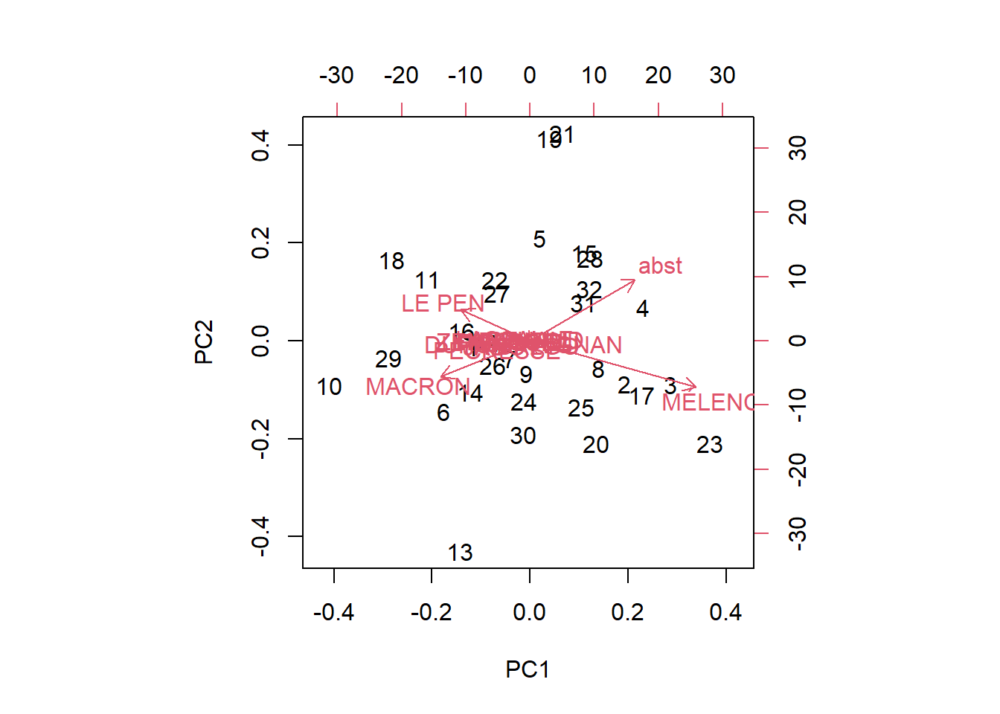
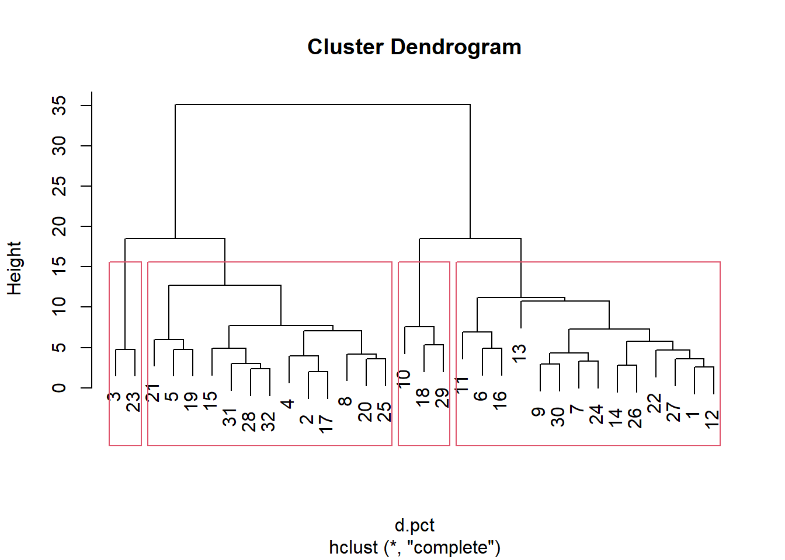

Multivariées
1 Préparation de la donnée
data <- read.csv("data/data2022.csv", fileEncoding = "UTF-8", dec = ",")
names(data)## [1] "X" "INSEE_COM" "NOM_COM_M"
## [4] "Libellé.de.la.commune" "Code.du.b.vote" "Inscrits"
## [7] "Abstentions" "X..Abs.Ins" "Votants"
## [10] "X..Vot.Ins" "Blancs" "X..Blancs.Ins"
## [13] "X..Blancs.Vot" "Nuls" "X..Nuls.Ins"
## [16] "X..Nuls.Vot" "Exprimés" "X..Exp.Ins"
## [19] "X..Exp.Vot" "N.Panneau" "Sexe"
## [22] "Nom" "Prénom" "Voix"
## [25] "X..Voix.Ins" "X..Voix.Exp" "N.Panneau.1"
## [28] "Sexe.1" "Nom.1" "Prénom.1"
## [31] "Voix.1" "X..Voix.Ins.1" "X..Voix.Exp.1"
## [34] "N.Panneau.2" "Sexe.2" "Nom.2"
## [37] "Prénom.2" "Voix.2" "X..Voix.Ins.2"
## [40] "X..Voix.Exp.2" "N.Panneau.3" "Sexe.3"
## [43] "Nom.3" "Prénom.3" "Voix.3"
## [46] "X..Voix.Ins.3" "X..Voix.Exp.3" "N.Panneau.4"
## [49] "Sexe.4" "Nom.4" "Prénom.4"
## [52] "Voix.4" "X..Voix.Ins.4" "X..Voix.Exp.4"
## [55] "N.Panneau.5" "Sexe.5" "Nom.5"
## [58] "Prénom.5" "Voix.5" "X..Voix.Ins.5"
## [61] "X..Voix.Exp.5" "N.Panneau.6" "Sexe.6"
## [64] "Nom.6" "Prénom.6" "Voix.6"
## [67] "X..Voix.Ins.6" "X..Voix.Exp.6" "N.Panneau.7"
## [70] "Sexe.7" "Nom.7" "Prénom.7"
## [73] "Voix.7" "X..Voix.Ins.7" "X..Voix.Exp.7"
## [76] "N.Panneau.8" "Sexe.8" "Nom.8"
## [79] "Prénom.8" "Voix.8" "X..Voix.Ins.8"
## [82] "X..Voix.Exp.8" "N.Panneau.9" "Sexe.9"
## [85] "Nom.9" "Prénom.9" "Voix.9"
## [88] "X..Voix.Ins.9" "X..Voix.Exp.9" "N.Panneau.10"
## [91] "Sexe.10" "Nom.10" "Prénom.10"
## [94] "Voix.10" "X..Voix.Ins.10" "X..Voix.Exp.10"
## [97] "N.Panneau.11" "Sexe.11" "Nom.11"
## [100] "Prénom.11" "Voix.11" "X..Voix.Ins.11"
## [103] "X..Voix.Exp.11"data <- data [data$INSEE_COM == '93010',]
ind <- grep("Ins", names(data))
pct <- data [, ind]
ind <- grep("Nom", names(data))
noms <- data [1,ind]
names(pct) [c(7:18)] ## [1] "X..Voix.Ins" "X..Voix.Ins.1" "X..Voix.Ins.2" "X..Voix.Ins.3"
## [5] "X..Voix.Ins.4" "X..Voix.Ins.5" "X..Voix.Ins.6" "X..Voix.Ins.7"
## [9] "X..Voix.Ins.8" "X..Voix.Ins.9" "X..Voix.Ins.10" "X..Voix.Ins.11"names(pct) [c(7:18)] <- noms
pct <- pct [,c(2, 7:18)]
names(pct) [1] <- "abst"rownames(pct) <- c(1:32)2 Exploration de la donnée
summary(pct)## abst ARTHAUD ROUSSEL MACRON
## Min. :20.80 Min. :0.0000 Min. :0.120 Min. : 7.92
## 1st Qu.:26.56 1st Qu.:0.2075 1st Qu.:0.530 1st Qu.:10.97
## Median :29.11 Median :0.2850 Median :1.015 Median :12.84
## Mean :29.67 Mean :0.3269 Mean :1.106 Mean :13.26
## 3rd Qu.:33.23 3rd Qu.:0.3925 3rd Qu.:1.495 3rd Qu.:15.08
## Max. :37.61 Max. :1.0100 Max. :2.770 Max. :22.60
## LASSALLE LE PEN ZEMMOUR MÉLENCHON
## Min. :0.110 Min. : 2.330 Min. :0.610 Min. :24.40
## 1st Qu.:0.700 1st Qu.: 6.173 1st Qu.:1.827 1st Qu.:33.36
## Median :0.950 Median : 7.815 Median :2.790 Median :35.27
## Mean :1.019 Mean : 8.142 Mean :2.834 Mean :36.37
## 3rd Qu.:1.353 3rd Qu.:10.062 3rd Qu.:3.705 3rd Qu.:40.24
## Max. :2.200 Max. :14.200 Max. :5.170 Max. :50.31
## HIDALGO JADOT PÉCRESSE POUTOU
## Min. :0.0000 Min. :0.0000 Min. :0.380 Min. :0.0000
## 1st Qu.:0.4300 1st Qu.:0.6875 1st Qu.:1.395 1st Qu.:0.2675
## Median :0.6900 Median :1.6050 Median :2.085 Median :0.4050
## Mean :0.7003 Mean :1.5250 Mean :2.239 Mean :0.4381
## 3rd Qu.:0.9500 3rd Qu.:2.1300 3rd Qu.:3.188 3rd Qu.:0.6025
## Max. :1.5200 Max. :3.7900 Max. :5.030 Max. :1.2500
## DUPONT-AIGNAN
## Min. :0.1300
## 1st Qu.:0.5475
## Median :0.7500
## Mean :0.8472
## 3rd Qu.:1.1450
## Max. :1.7600cor(pct)## abst ARTHAUD ROUSSEL MACRON LASSALLE
## abst 1.00000000 -0.09124502 -0.60695243 -0.86646274 -0.5864629
## ARTHAUD -0.09124502 1.00000000 -0.13340523 0.31314843 0.1097814
## ROUSSEL -0.60695243 -0.13340523 1.00000000 0.51762898 0.6629999
## MACRON -0.86646274 0.31314843 0.51762898 1.00000000 0.6125672
## LASSALLE -0.58646290 0.10978138 0.66299986 0.61256724 1.0000000
## LE PEN -0.56721372 0.34203816 0.47300047 0.56621380 0.6844895
## ZEMMOUR -0.70687066 0.04239692 0.60379129 0.55030176 0.4912361
## MÉLENCHON 0.67650699 -0.34330375 -0.64689794 -0.75526662 -0.7577216
## HIDALGO -0.46001130 -0.11091136 0.25785445 0.37456278 0.3065050
## JADOT -0.80287393 0.16878089 0.65570636 0.68109138 0.5851233
## PÉCRESSE -0.76182636 0.01653658 0.56635567 0.64741839 0.4988701
## POUTOU -0.11064989 -0.07631365 0.07872894 0.02931963 0.1041182
## DUPONT-AIGNAN -0.51656434 0.02757267 0.29312002 0.29734963 0.1636518
## LE PEN ZEMMOUR MÉLENCHON HIDALGO JADOT
## abst -0.56721372 -0.70687066 0.6765070 -0.46001130 -0.8028739
## ARTHAUD 0.34203816 0.04239692 -0.3433037 -0.11091136 0.1687809
## ROUSSEL 0.47300047 0.60379129 -0.6468979 0.25785445 0.6557064
## MACRON 0.56621380 0.55030176 -0.7552666 0.37456278 0.6810914
## LASSALLE 0.68448946 0.49123612 -0.7577216 0.30650501 0.5851233
## LE PEN 1.00000000 0.61891028 -0.8835188 0.09895654 0.6190371
## ZEMMOUR 0.61891028 1.00000000 -0.7540586 0.33215324 0.6825063
## MÉLENCHON -0.88351878 -0.75405857 1.0000000 -0.20343821 -0.7393493
## HIDALGO 0.09895654 0.33215324 -0.2034382 1.00000000 0.1669768
## JADOT 0.61903713 0.68250632 -0.7393493 0.16697683 1.0000000
## PÉCRESSE 0.50420577 0.76590872 -0.7199984 0.38445787 0.7119466
## POUTOU 0.20246700 0.11210265 -0.1286294 -0.06104358 0.1493222
## DUPONT-AIGNAN 0.26882589 0.51160119 -0.3636486 0.10326308 0.4543633
## PÉCRESSE POUTOU DUPONT-AIGNAN
## abst -0.76182636 -0.11064989 -0.51656434
## ARTHAUD 0.01653658 -0.07631365 0.02757267
## ROUSSEL 0.56635567 0.07872894 0.29312002
## MACRON 0.64741839 0.02931963 0.29734963
## LASSALLE 0.49887014 0.10411821 0.16365181
## LE PEN 0.50420577 0.20246700 0.26882589
## ZEMMOUR 0.76590872 0.11210265 0.51160119
## MÉLENCHON -0.71999840 -0.12862944 -0.36364860
## HIDALGO 0.38445787 -0.06104358 0.10326308
## JADOT 0.71194664 0.14932217 0.45436328
## PÉCRESSE 1.00000000 0.04772693 0.54522523
## POUTOU 0.04772693 1.00000000 0.08205208
## DUPONT-AIGNAN 0.54522523 0.08205208 1.00000000pairs(pct)
3 ACP analyse en composante principale
res <- prcomp(pct)
plot(res)
biplot(res)
4 Classification hiérarchique
# matrice des distances
d.pct <- dist(pct)
cah <- hclust(d.pct)
plot(cah)
Dendrogramme avec matérialisation des groupes
plot(cah)
rect.hclust(cah,k=4)
groupes.cah <- cutree(cah,k=4)
#liste des groupes
print(sort(groupes.cah))## 1 6 7 9 11 12 13 14 16 22 24 26 27 30 2 4 5 8 15 17 19 20 21 25 28 31
## 1 1 1 1 1 1 1 1 1 1 1 1 1 1 2 2 2 2 2 2 2 2 2 2 2 2
## 32 3 23 10 18 29
## 2 3 3 4 4 4L5GEABIM Analyses bivariées et multivariées